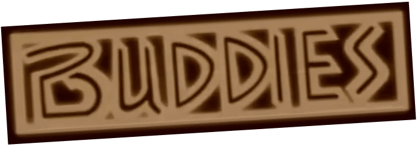
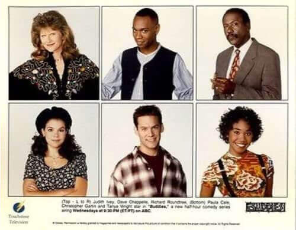
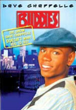

Buddies
Buddies es una comedia de situación de la televisión estadounidense que se emitió en ABC del 5 de marzo al 10 de abril de 1996. Fue creada por Carmen Finestra, David McFadzean y Matt Williams y protagonizada por Dave Chappelle, Christopher Gartin , Tanya Wright , Richard Roundtree.
Los comediantes Dave Chappelle y Jim Breuer atrajeron la atención de los ejecutivos de las cadenas de televisión con su  aparición especial en el episodio del 14 de marzo de 1995 (cuarta temporada) de la comedia Home Improvement de ABC, altamente calificada. La historia tenía a Chappelle y Breuer haciendo de amigos que aparecen juntos en Tool Time para pedirle consejo a Tim Taylor sobre sus novias. La salida única de los personajes en el episodio resultó tan popular que ABC decidió darles a Chappelle y Breuer su propia comedia de situación de media hora.
Un mal final
Buddies filmó trece episodios, pero ABC solo transmitió cinco de ellos antes de cancelar el programa en abril de 1996. Para entonces, Jim Breuer era conocido en todo Estados Unidos por su trabajo en Saturday Night Live. Chappelle participaría en otra comedia de situación, pero Dave acusaría a la red de racismo después de que supuestamente se sintieran incómodos con el elenco afroamericano y quisieran que la mayoría de ellos fueran reemplazados por personas blancas.
El despido de Breuer, el fracaso posterior de Buddies , el racismo exhibido por los ejecutivos y la muerte de su padre llevaron a Chappelle a considerar retirarse del mundo del espectáculo (la primera vez). En cambio, siguió trabajando, lo que condujo a Chappelle's Show , que condujo al lanzamiento en DVD de diez de los trece capitulos.